Anatomski i medicinski kutak
Čuva leđa i kukove. Ergonomski je oblikovana da rastereti kičmu. Pošto je niska, ima i bezbednosnu ulogu: ako sa nje siđete nespretno, udarac je kratak, a kukovi ostaju zaštićeni.
IMATE PROBLEM SA STOLICOM?!
PROBAJTE NAŠU!
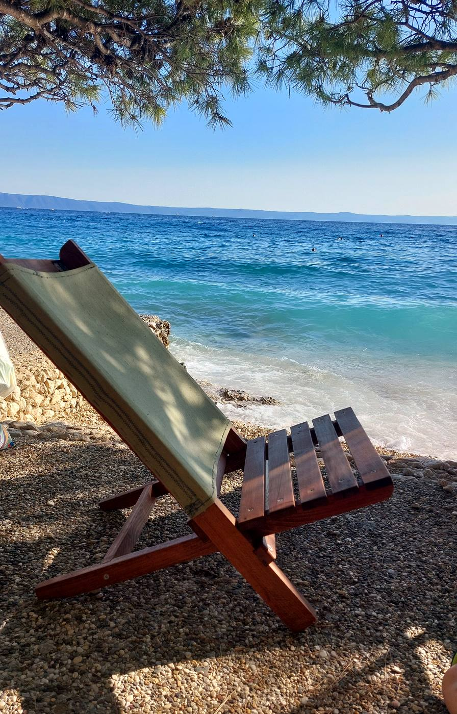
Vrhunske drvene stolice stvorene za potpuno opuštanje.
Izaberi svoju stolicu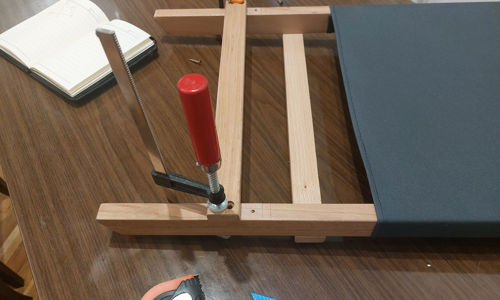
Domaća proizvodnja
Nisko sedište, vrhunsko bukovo drvo i stabilnost na pesku bez prevrtanja.
Saznaj višeBez brige uz naš besplatan servis
Kvalitet bez kompromisa. Dobijate potpuno besplatno servisiranje u godini kupovine i celoj narednoj godini.
Pogledaj uslove servisaBilo da hvatate hlad pod krošnjama ili upijate sunce na tirkiznim plažama, naša stolica je vaš najbolji letnji saputnik. Nisko sedište daje vam osećaj da ste jedno sa prirodom, a njena stabilnost na pesku garantuje udobnost bez kompromisa.
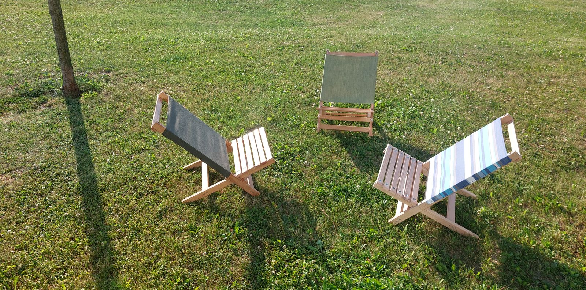
Čuva leđa i kukove. Ergonomski je oblikovana da rastereti kičmu. Pošto je niska, ima i bezbednosnu ulogu: ako sa nje siđete nespretno, udarac je kratak, a kukovi ostaju zaštićeni.
„Samo se prevrneš” opcija. Za žurke i opuštanje pored roštilja. Stolica je toliko blizu zemlje da nema opasnog pada — ako vas prevari piće, samo se lagano prevrnete na travu.
Besplatno lečenje svake stolice. Ako se stolica ipak pokvari od previše uživanja ili preteških gostiju, servis je besplatan u godini kupovine i celoj narednoj.
Povuci stolicu mišem ili prstom. Niz ide redom: 01.jpg, 02.jpg, 03… iste stolice, u krug.
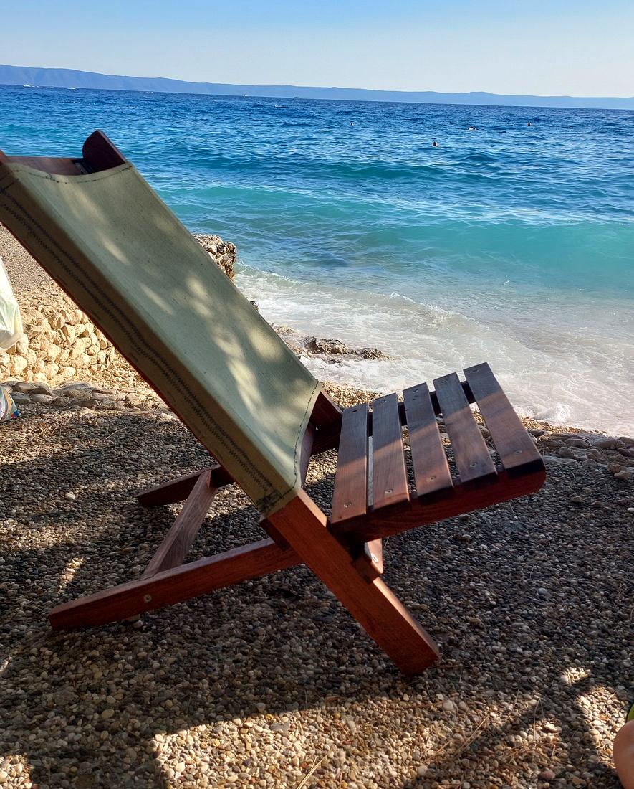
Jedan kadar stolice. Kad dodaš 01.jpg, 02.jpg i dalje, prevlačenje je vrti u krug.
Dizajnirana je za situacije u kojima vam treba brz zaklon, stabilnost i udobnost na otvorenom.
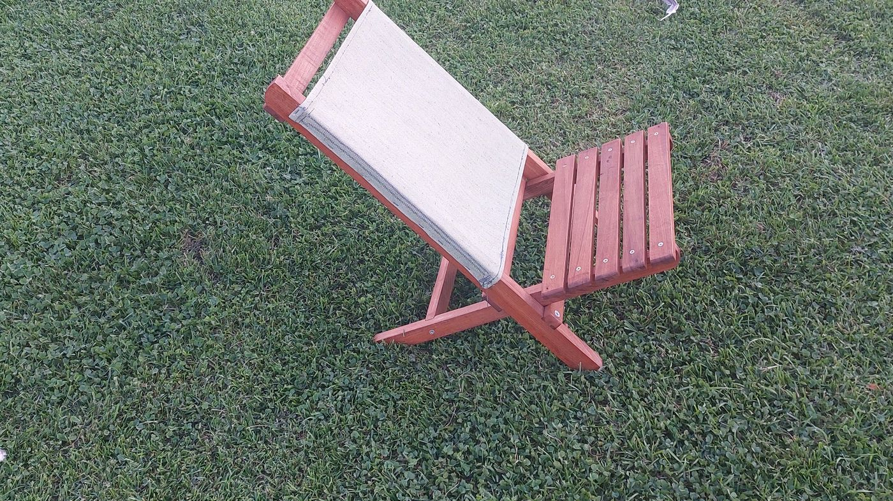
Idete na lokalni teren da gledate decu kako igraju? Dok drugi stoje ili sede na zemlji, vi rasklopite stolicu, uvalite se pored aut-linije i gledate utakmicu.
Za letnje večeri kad se ekipa okupi u dvorištu ili ispred ulaza. Stolica se sklapa za sekundu, laka je za nošenje niz stepenice, a nisko sedište ostavlja razgovor pri zemlji.
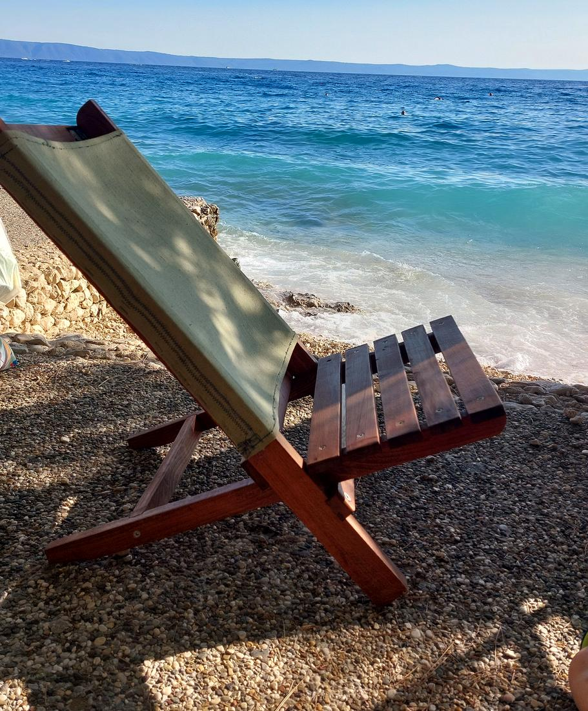
Klikni boju. Menja se prava fotografija platna, bez digitalnog prebojavanja.
Svaka stolica prolazi sečenje, merenje, stezanje i sklapanje u porodičnoj radionici. Ručni rad, domaća bukovina i pažnja na svakom spoju.
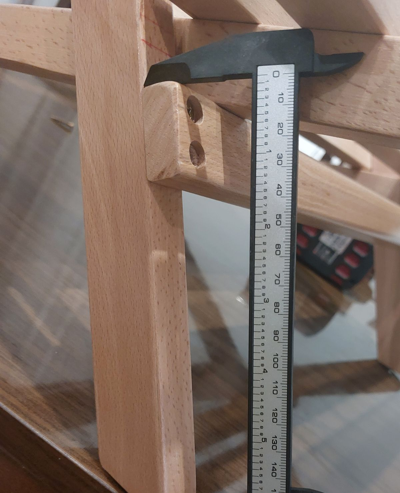
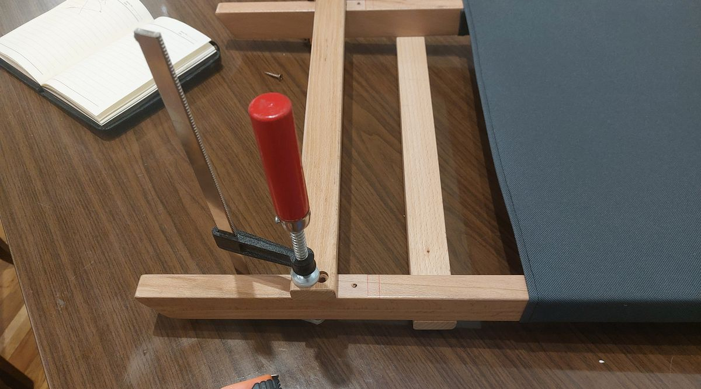
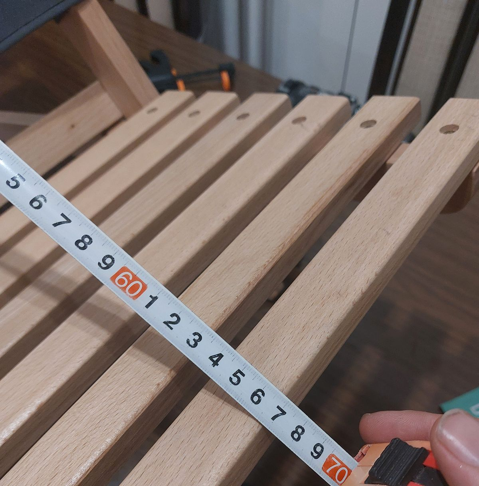
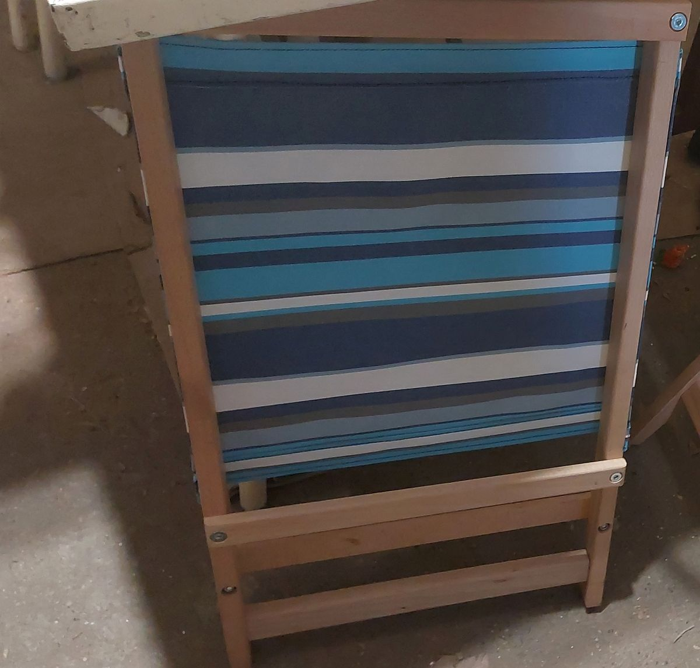
Mali porodični projekat. Deca su bila uz sklapanje, a svaki ram je prošao kroz iste ruke, stegu i meru. Kratki video može da stane ovde čim fajl assets/video/sklapanje.mp4 bude u folderu.
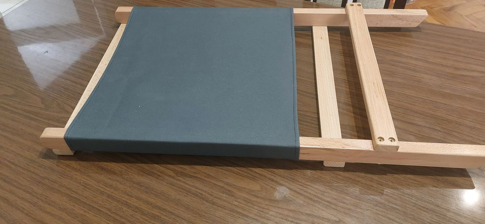
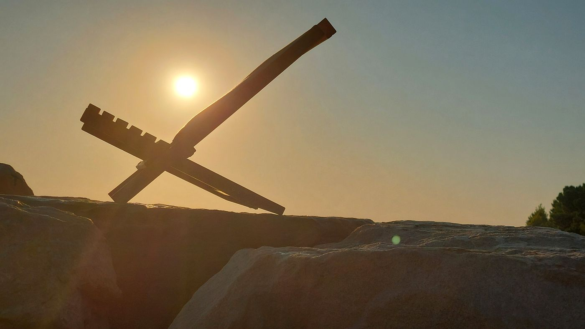
La-Pižu stolica ima nisko sedište i širok drveni oslonac. Na pesku stoji stabilno i ne prevrće se kad se u nju zavalite.
Sedište je nisko, a platno prati leđa. Pošto ste već blizu tla, nespretan silazak nije pad sa visine, pa su kukovi manje izloženi udarcu.
Servis je besplatan u godini kupovine i u celoj narednoj godini.
Štrand Zelena, Makarska Plava, Morska Prugasta i Zalazak Narandžasta. Konstrukcija je od domaće bukovine, ručni rad radionice SteNa La-Pizu u Novom Sadu.
Na plaži i pesku, pored aut-linije na fudbalskom terenu i ispred zgrade kad se ekipa skupi. Sklapa se i nosi pod rukom.
e-stolice.rs - SteNa La Pizu, uvali se.